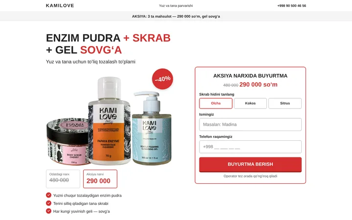
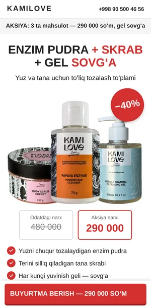
Oq · qizil tugma
Oq + qizil
Klassik tovarka sahifasi: oq fon, qizil tugmalar va narx. Eski lp-base saytlariga eng yaqini.
Yoqqanini oching va telefonda ham tekshirib koʻring.
Koʻrish nusxasi: bu sahifalardan buyurtma yuborilmaydiBitta taklif, 5 ta blok, oq fon va bitta rang. Kompyuterda forma birinchi ekranning oʻzida turadi. Uchala variantning matni va formasi bir xil — farqi faqat tugma rangida.


Klassik tovarka sahifasi: oq fon, qizil tugmalar va narx. Eski lp-base saytlariga eng yaqini.
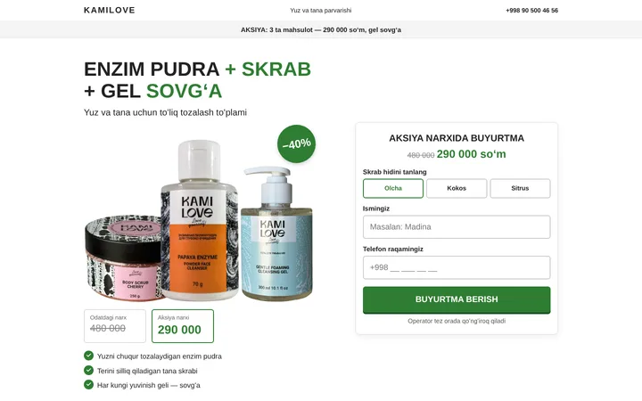
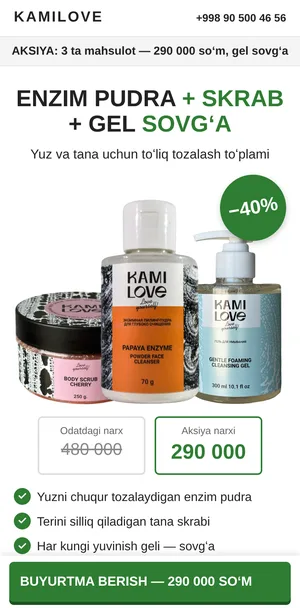
Xuddi shu sahifa, tugmalar yashil. Tinchroq koʻrinadi, kosmetika uchun mos.
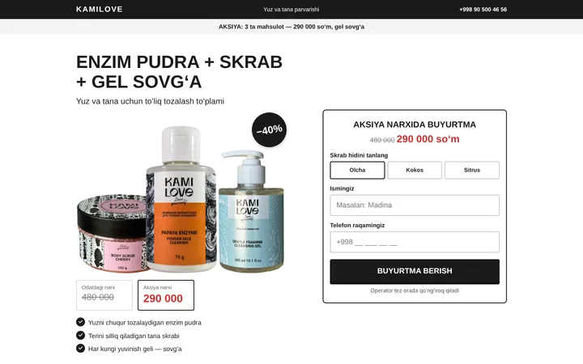
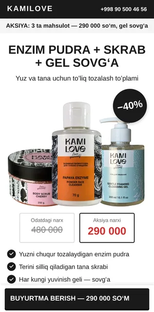
Eng sodda: qora-oq, faqat narx qizil. Ortiqcha hech narsa yoʻq.
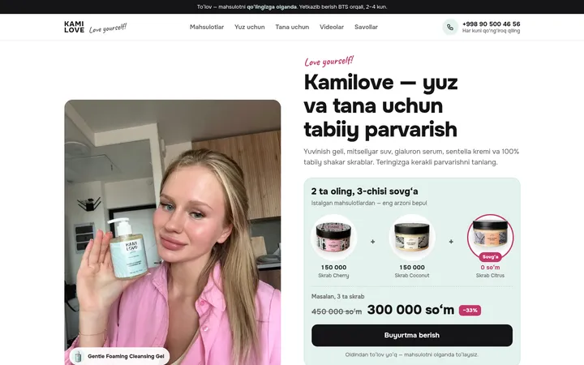
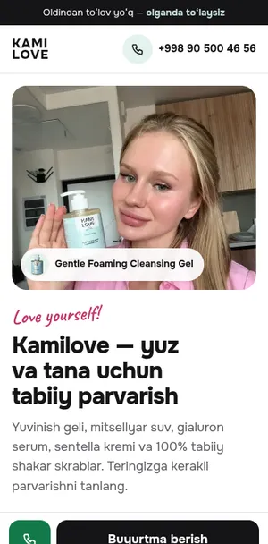
Oq fon, myatniy aksiya kartasi, qadoqdagi qora-oq marmar naqsh. Keng sahifa: katalog, yuz va tana toʻplamlari, videolar.
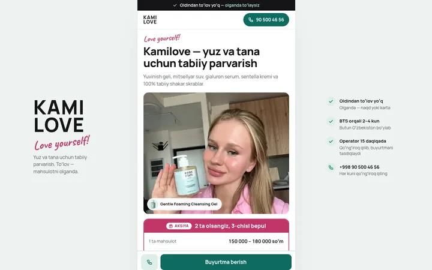
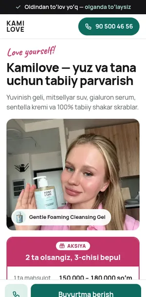
Telefon ekranidek tor bitta ustun, kompyuterda ham oʻrtada turadi. Narx jadvali, ixcham mahsulotlar va qisqa forma — Telegram/Instagram reklamasi uchun.
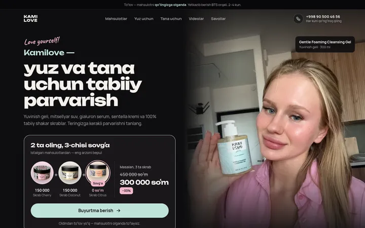
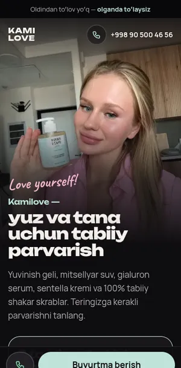
Toʻq fonda pastel mahsulotlar galereyadagidek ajralib turadi. Katta sarlavhalar, marmar tekstura, videolar markazda.
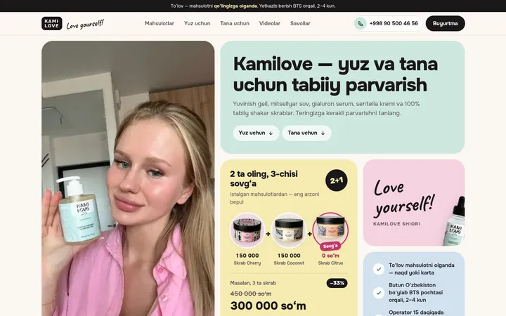
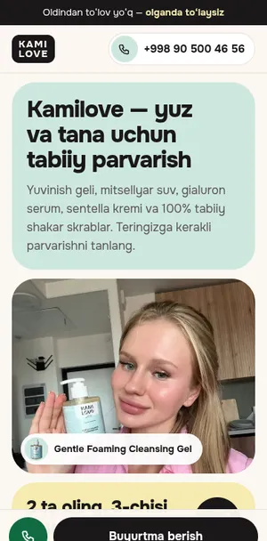
Yorliqlardagi ranglar — myatniy, pushti, shaftoli, sariq — katta kataklarda. Yorqin va yoshlarga mos, lekin tartibli.